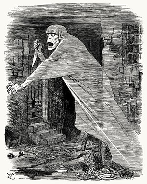

화이트채플 연쇄살인사건(영어: Whitechapel murders)은 1888년 4월 3일에서 1891년 2월 13일에 걸쳐
당시 영국 이스트엔드오브런던의 빈민가였던 화이트채플 구에서 벌어진 연쇄살인사건이다.
총 11건의 살인사건이 있었으며, 피해자는 모두 여성이었다.
끝까지 그 정체가 밝혀지지 않은 악명높은 연쇄살인자 잭 더 리퍼가
이 살인사건들 중 일부 또는 전체의 범인이라고 한다.
피해자(에마 엘리자베스 스미스, 마사 태브럼, 메리 앤 니컬스, 애니 채프먼, 엘리자베스 스트라이드, 캐서린 에도스, 메리 제인 켈리, 로즈 밀렛, 앨리스 맥켄지, 프랜시스 콜스, 무명녀 1인) 중
대부분이 매춘부였다. 스미스는 잭 더 리퍼가 아닌 깡패들에게 강간 강도를 당하고 죽었다.
태브럼은 39차례 찔려 죽었고, 니컬스, 채프먼, 스트라이드, 에도스, 켈리, 맥켄지, 콜스는 멱이 따여 죽었다.
에도스와 스트라이드는 같은 날 밤에 불과 1마일 떨어진 거리에서 불과 수 분 차이로 살해당했다.
스스로 살인범임을 자처한 이가 언론사에 보낸 엽서 내용에 따라
에도스-스트라이드 사건은 "더블 이벤트"라는 별명으로도 불렸다.
니컬스, 채프먼, 에도스, 켈리의 시체는 복부가 훼손되어 있었고, 밀렛은 교살당했다.
신원불상의 무명녀는 그 시체가 토막나 있었고 정확한 사인은 알 수 없다.
광역경찰청, 런던 시경찰, 그리고 민간조직 화이트채플 자경위원회가 사건의 범인 또는 범인들을 추적했다.
그러나 광범위한 수사와 여러 번의 체포에도 불구하고
진범 또는 진범들은 체포되지 않았으며 신원조차 밝혀지지 않았다.
화이트채플 연쇄살인사건은 이스트엔드 슬럼가의 열악한 생활에 대한 주의를 환기시켰으며,
결과적으로 도시빈민의 생활수준 향상에 기여했다.
